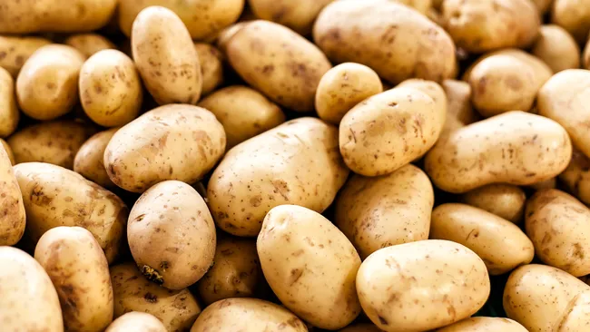

১৬শ শতকের দ্বিতীয়ার্ধে স্পেনীয়রা আমেরিকা থেকে আলু ইউরোপে প্রবর্তন করে। বর্তমানে এটি বিশ্বের অনেক অংশে একটি প্রধান খাদ্য এবং বিশ্বের বেশিরভাগ খাদ্য সরবরাহের একটি অবিচ্ছেদ্য অংশ। ২০১৪ সালের হিসাবে, ভুট্টা (ভুট্টা), গম এবং ধানের পরে আলু ছিল বিশ্বের চতুর্থ বৃহত্তম খাদ্য শস্য। সহস্রাব্দের কৃত্রিম নির্বাচনের পর এখন ৫,০০০ টিরও বেশি বিভিন্ন ধরনের আলুর জাত রয়েছে। বর্তমানে বিশ্বব্যাপী চাষ করা আলুগুলির ৯৯% এরও বেশি জাত দক্ষিণ-মধ্য চিলির নিম্নভূমিতে উদ্ভূত হওয়া জাত থেকে এসেছে। একটি খাদ্য উৎস এবং রন্ধনসম্পর্কীয় উপাদান হিসাবে আলুর গুরুত্ব অঞ্চলভেদে পরিবর্তিত হয় এবং এখনও পরিবর্তিত হচ্ছে। এটি ইউরোপে, বিশেষ করে উত্তর এবং পূর্ব ইউরোপে একটি অপরিহার্য ফসল হিসাবে রয়ে গেছে, যেখানে মাথাপিছু উৎপাদন এখনও বিশ্বে সর্বোচ্চ, যদিও গত কয়েক দশকে উৎপাদনের সবচেয়ে দ্রুত সম্প্রসারণ ঘটেছে দক্ষিণ ও পূর্ব এশিয়ায়, ২০১৮ সালের হিসাবে চীন এবং ভারত এক্ষেত্রে সামগ্রিক উৎপাদনে বিশ্বকে নেতৃত্ব দিচ্ছে।